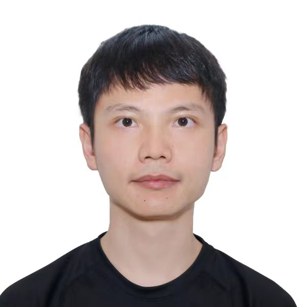

|
Dayan Guan (官大衍)
|
 |
Research Fellow,
School of Computer Science and Engineering,
Nanyang Technological University, Singapore
E-mail: dayan.guan@outlook.com
Google Scholar
GitHub
|
About me
I am currently a Research Fellow at School of Computer Science and Engineering, the Nanyang Technological University, working with Prof. Shijian Lu. I received my PhD at the Zhejiang University in Sep 2019, supervised by Prof. Yanpeng Cao, Prof. Jiangxin Yang, and Prof. Yanlong Cao. I obtained my bachelor's degree from Central South University in Jun 2014. My research interests include: artificial intelligence, scene understanding, unsupervised learning, deep learning, autonomous driving and infrared technology.
News
Mar, 2022: Two papers accepted to CVPR 2022.
Sep, 2021: One paper accepted to NeurIPS 2021.
Jul, 2021: Two papers accepted to ICCV 2021.
May, 2021: One paper accepted to IEEE Transactions on Multimedia.
Mar, 2021: Two papers accepted to CVPR 2021.
Dec, 2020: One paper accepted to Pattern Recognition.
Rigorously Refereed Publications
Dayan Guan, Jiaxing Huang, Aoran Xiao, Shijian Lu*. "Unbiased Subclass Regularization for Semi-Supervised Semantic Segmentation." CVPR, 2022.[pdf]
Jiaxing Huang, Dayan Guan, Aoran Xiao, Shijian Lu*."Category Contrast for Unsupervised Domain Adaptation in Visual Tasks." CVPR, 2022. [pdf] [code]
Jiaxing Huang, Dayan Guan, Aoran Xiao, Shijian Lu*."Model adaptation: Historical contrastive learning for unsupervised domain adaptation without source data."NeurIPS, 2021. [pdf] [code]
Dayan Guan, Jiaxing Huang, Aoran Xiao, Shijian Lu*. "Domain adaptive video segmentation via temporal consistency regularization." ICCV, 2021. [pdf] [code]
Jiaxing Huang, Dayan Guan, Aoran Xiao, Shijian Lu*."RDA: Robust Domain Adaptation via Fourier Adversarial Attacking." ICCV, 2021. [pdf] [code]
Dayan Guan, Jiaxing Huang, Aoran Xiao, Shijian Lu*. Uncertainty-Aware Unsupervised Domain Adaptation in Object Detection. IEEE Transactions on Multimedia, 2021. [pdf] [code]
Jiaxing Huang, Dayan Guan, Aoran Xiao, Shijian Lu*."Cross-View Regularization for Domain Adaptive Panoptic Segmentation." CVPR, 2021. [pdf]
Jiaxing Huang, Dayan Guan, Aoran Xiao, Shijian Lu*."FSDR: Frequency Space Domain Randomization for Domain Generalization." CVPR, 2021. [pdf]
Dayan Guan, Jiaxing Huang, Shijian Lu*, Aoran Xiao. "Scale variance minimization for unsupervised domain adaptation in image segmentation." Pattern Recognition, 2021. [pdf] [code]
Dayan Guan, Yanpeng Cao*, Jiangxin Yang, Yanlong Cao, and Michael Ying Yang. "Fusion of multispectral data through illumination-aware deep neural networks for pedestrian detection." Information Fusion, 2019. [pdf]
Dayan Guan, Xing Luo, Yanpeng Cao, Jiangxin Yang, Yanlong Cao, George Vosselman, and Michael Ying Yang, “Unsupervised Domain Adaptation for Multispectral Pedestrian Detection.” International Conference on Computer Vision and Pattern Recognition Workshops, 2019. [pdf]
Yanpeng Cao, Dayan Guan, Weilin Huang, Jiangxin Yang, Yanlong Cao, and Yu Qiao*. "Pedestrian detection with unsupervised multispectral feature learning using deep neural networks." Information Fusion, 2019. [pdf]
Yanpeng Cao, Dayan Guan, Yulun Wu, Jiangxin Yang*, Yanlong Cao, Michael Ying Yang. "Box-level segmentation supervised deep neural networks for accurate and real-time multispectral pedestrian detection." ISPRS Journal of Photogrammetry and Remote Sensing, 2019. [pdf]
Dayan Guan, Yanpeng Cao*, Jiangxin Yang, Yanlong Cao, and Christel-Loic Tisse. "Exploiting fusion architectures for multispectral pedestrian detection and segmentation." Applied Optics, 2018. (Editors' Pick) [pdf]
Note: * indicates the corresponding author.
Full list of publications in Google Scholar.
Professional Service
Reviewer
IEEE/CVF International Conference on Computer Vision and Pattern Recognition (CVPR)
IEEE/CVF International Conference on Computer Vision (ICCV)
European Conference on Computer Vision (ECCV)
IEEE Transactions on Image Processing
IEEE Transactions on Multimedia
IEEE Transactions on Circuits and Systems for Video Technology
Pattern Recognition
ISPRS Journal of Photogrammetry and Remote Sensing
|